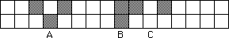

| 17. (a) The live cell A means the rule for an N = 3 CA must include LDL gives L. The live cell at B means the rule must include DLL gives L. The dead cell at C means the rule must include LDL gives D, contradicting the observation for A. Consequently, these cannot be the first two rows of an N = 3 CA. |
|  |
| (b) The live cell A means the rule for an N = 5 CA must include DLDLD gives L. The live cell at B means the rule must include DDLLD gives L. All other nbhd configs give D. Note the D cell at C is a consequence of LLDLD gives D. Because LLDLD is not ne of the two nbhd configs, DLDLD and DDLLD, giving L, the dead cell at C causes no problem for an N = 5 CA. |
Return to Homework 9 Practice.